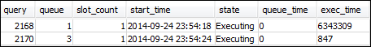
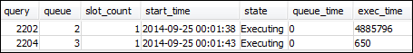
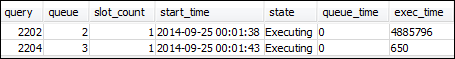
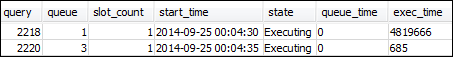
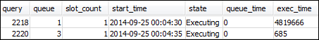

本文為英文版的機器翻譯版本，如內容有任何歧義或不一致之處，概以英文版為準。
第 3 節：根據使用者群組和查詢群組將查詢路由至佇列
現在，您已將叢集與新的參數群組建立關聯，也已設定 WLM。接下來，執行一些查詢，以了解 Amazon Redshift 如何將查詢路由傳送到佇列來處理。
步驟 1：檢視資料庫中的查詢佇列組態
首先，確認資料庫有您預期的 WLM 組態。
檢視查詢佇列組態
-
開啟 RSQL 並執行下列查詢。此查詢使用您在步驟 1：建立 WLM_QUEUE_STATE_VW 檢視中建立的 WLM_QUEUE_STATE_VW 檢視。如果叢集在重新啟動之前有已連線到資料庫的工作階段，則需要重新連線。
select * from wlm_queue_state_vw;以下是結果範例。

比較這些結果與您在步驟 1：建立 WLM_QUEUE_STATE_VW 檢視收到的結果。請注意，現在有兩個額外的佇列。佇列 1 現在是 test 查詢群組的佇列，佇列 2 是 admin 使用者群組的佇列。
佇列 3 現在是預設佇列。清單中的最後一個佇列一定是預設佇列。如果查詢未指定使用者群組或查詢群組，依預設會將查詢路由傳送到此佇列。
-
執行下列查詢來確認您的查詢現在是在佇列 3 執行。
select * from wlm_query_state_vw;以下是結果範例。

步驟 2：使用查詢群組佇列執行查詢
使用查詢群組佇列執行查詢
-
執行以下查詢將其路由到
test查詢群組。set query_group to test; select avg(l.priceperticket*s.qtysold) from listing l, sales s where l.listid <40000; -
在另一個 RSQL 視窗中執行下列查詢。
select * from wlm_query_state_vw;以下是結果範例。
查詢已路由到測試查詢群組，即現在的佇列 1。
-
選取佇列狀態檢視中的所有項目。
select * from wlm_queue_state_vw;您會看到類似以下的結果。

-
現在，重設查詢群組並再次執行長時間查詢：
reset query_group; select avg(l.priceperticket*s.qtysold) from listing l, sales s where l.listid <40000; -
對檢視執行查詢以查看結果。
select * from wlm_queue_state_vw; select * from wlm_query_state_vw;以下為結果範例。


結果應該是查詢現在再次在佇列 3 中執行。
步驟 3：建立資料庫使用者和群組
您必須先在資料庫中建立使用者群組並在群組中新增使用者，才可以在此佇列中執行查詢。接著，您將使用新使用者的憑證登入 RSQL，然後執行查詢。您需要以超級使用者的身分 (例如管理員使用者) 執行查詢，才能建立資料庫使用者。
建立新的資料庫使用者和使用者群組
-
在 RSQL 視窗中執行以下命令，可在資料庫中建立新的資料庫使用者，名為
adminwlm。create user adminwlm createuser password '123Admin'; -
然後執行下列命令來建立新使用者群組，並將您的新使用者
adminwlm加入群組。create group admin; alter group admin add user adminwlm;
步驟 4：使用使用者群組佇列執行查詢
接下來您要執行查詢，並將其路由到使用者群組佇列。當您要將查詢路由到您設定用來處理想執行之查詢類型的佇列，請這麼做。
使用使用者群組佇列執行查詢
-
在第 2 個 RSQL 視窗中，執行以下查詢切換到
adminwlm帳戶，然後以該使用者的身分執行查詢。set session authorization 'adminwlm'; select avg(l.priceperticket*s.qtysold) from listing l, sales s where l.listid <40000; -
在第 1 個 RSQL 視窗中，執行以下查詢來看看查詢被路由到哪個查詢佇列。
select * from wlm_query_state_vw; select * from wlm_queue_state_vw;以下為結果範例。
 
執行此查詢的佇列是佇列 2，即
admin使用者佇列。每次您以此使用者身分登入並執行查詢時，這些查詢就會在佇列 2 中執行，除非您指定要使用其他查詢群組。所選佇列取決於佇列指派規則。如需更多詳細資訊，請參閱 WLM 佇列指派規則。 -
現在，從第 2 個 RSQL 視窗執行下列查詢。
set query_group to test; select avg(l.priceperticket*s.qtysold) from listing l, sales s where l.listid <40000; -
在第 1 個 RSQL 視窗中，執行以下查詢來看看查詢被路由到哪個查詢佇列。
select * from wlm_queue_state_vw; select * from wlm_query_state_vw;以下為結果範例。
 
 -
完成後，請重設查詢群組。
reset query_group;